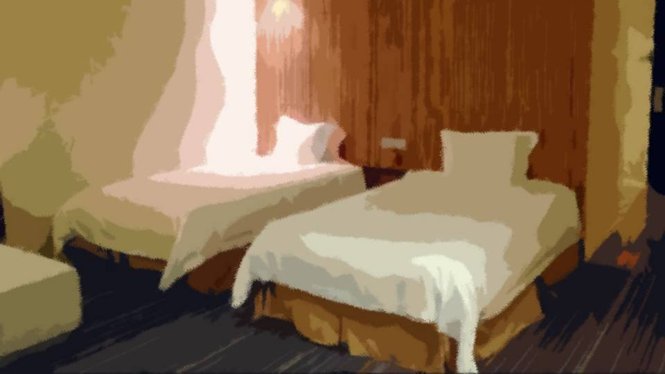
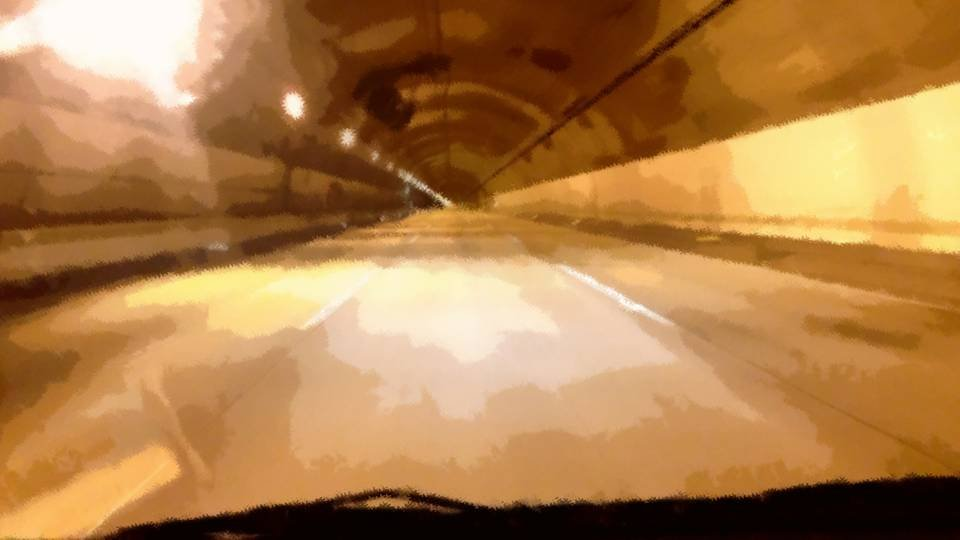
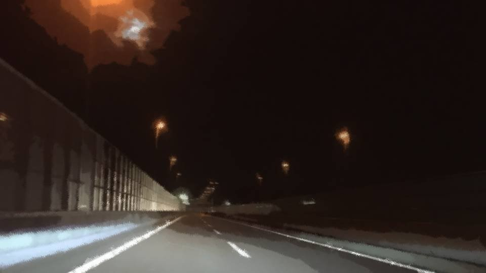

生まれ変わる家族たち

――時刻は22時半になっていた。
お化け屋敷の後は、極力刺激の少ないメリーゴーランドやコーヒーカップに乗った。
ありがちなアトラクションだったので、待ち時間がさほどないのはよかったが、今日のラインナップはバランスが悪すぎた……。
お化け屋敷の後は、極力刺激の少ないメリーゴーランドやコーヒーカップに乗った。
ありがちなアトラクションだったので、待ち時間がさほどないのはよかったが、今日のラインナップはバランスが悪すぎた……。
私たち姉妹2人は同じ部屋だ。
ホテルに入ってからも、特に会話はない。
ホテルに入ってからも、特に会話はない。

「私もう寝るから。うるさくしないでよ」
これが部屋で交わした唯一の会話だ。
いや、私が返事をする前にベッドにもぐりこんでしまったのだから、会話ですらない。
いや、私が返事をする前にベッドにもぐりこんでしまったのだから、会話ですらない。
今日のお化け屋敷では、何年分の会話をしただろうか。
お姉ちゃんとの会話らしい会話は、本当に久しぶりだった。
もう、あんな会話することはないのかな……。
お姉ちゃんとの会話らしい会話は、本当に久しぶりだった。
もう、あんな会話することはないのかな……。
電話が鳴った。
「うるさくしないでって言ったでしょ？」
「ごめん、ちょっとだけ……」
「ごめん、ちょっとだけ……」

新村先輩からの着信だ。
声が漏れないように頭から布団をかぶる。
声が漏れないように頭から布団をかぶる。
「もしもーし、五島でーす」
「も、もしもし！ 五島……！？」
小声で応答したにもかかわらず、新村先輩の大声が聞こえた。
「も、もしもし！ 五島……！？」
小声で応答したにもかかわらず、新村先輩の大声が聞こえた。
「どうしたんですか？」
「こんな時間にすまない。落ち着いて聞いてほしいんだが……」
「こんな時間にすまない。落ち着いて聞いてほしいんだが……」
「先輩どうしたんですか！？ 先輩こそ、落ち着いてください！」
がばっと起き上がり、小声を忘れて返事をする。
がばっと起き上がり、小声を忘れて返事をする。
「ちょっと……！」
「ごめん、何か大変な用事みたいなの」
「ったく……」
「ごめん、何か大変な用事みたいなの」
「ったく……」
お姉ちゃんはあっちを向いて頭から布団をかぶった。
「悪い、うるさくして……」
「いえ、大丈夫ですよ。どうしました？」
私がそう言うと、新村先輩が大きく深呼吸する。
「いえ、大丈夫ですよ。どうしました？」
私がそう言うと、新村先輩が大きく深呼吸する。
「ばあちゃんが……
亡くなった」

――私は車の助手席に座り、家に向かっていた。
もう、遊園地で遊んでいる場合ではない。
明日にでも先輩たちと落ち合い、荒田に向かうのだ。
荒田集落で行われる葬儀に参列するために。
もう、遊園地で遊んでいる場合ではない。
明日にでも先輩たちと落ち合い、荒田に向かうのだ。
荒田集落で行われる葬儀に参列するために。
お父さんとお母さんは、お酒を飲んでいたから運転はできない。
しかもこの時間では、電車もない。
だから運転してくれたのは……。
しかもこの時間では、電車もない。
だから運転してくれたのは……。


「お姉ちゃん、免許持ってたんだ……
ありがとう」
「別にあんたに言う必要なかったし」
お父さんとお母さんはホテルに残り、2人で出てきた。
お姉ちゃんは無言で運転を続けた。
家に着くまでの2時間、こんな空気のままなのだろうか。
「別にあんたに言う必要なかったし」
お父さんとお母さんはホテルに残り、2人で出てきた。
お姉ちゃんは無言で運転を続けた。
家に着くまでの2時間、こんな空気のままなのだろうか。
高速道路の街灯が、車内を断続的に照らしている。
ゴールデンウィークと言えど、この時間に走行しているのはトラックばかり。
お姉ちゃんは飛ばすでもなく、ゆっくりでもなく、交通の流れに合わせ淡々と車を走らせる。
ゴールデンウィークと言えど、この時間に走行しているのはトラックばかり。
お姉ちゃんは飛ばすでもなく、ゆっくりでもなく、交通の流れに合わせ淡々と車を走らせる。
新村先輩の話では、さっきエリカちゃんが亡くなったそうだ。
例の事件に関連しているのかと疑ったが、新村先輩の話では、死因は事件性のない心筋梗塞らしい。
荒田でのことを思い返される。
例の事件に関連しているのかと疑ったが、新村先輩の話では、死因は事件性のない心筋梗塞らしい。
荒田でのことを思い返される。

私が『絵梨奈』と呼ぶことを許した唯一の友達。
50歳以上も離れた友達。
ちょっといたずら好きでかわいい友達。
命がけで私たちを助けてくれた友達。
私を、最後の友達と言ってくれた人。
50歳以上も離れた友達。
ちょっといたずら好きでかわいい友達。
命がけで私たちを助けてくれた友達。
私を、最後の友達と言ってくれた人。
「ううう……」
涙がこぼれてくる。
年齢的にはこのような急逝も仕方ないのかもしれない。
今度の夏休みに、みんなで会いに行こうと思っていたのに……。
涙がこぼれてくる。
年齢的にはこのような急逝も仕方ないのかもしれない。
今度の夏休みに、みんなで会いに行こうと思っていたのに……。
「その友達、何で死んだの？
事故？」
「心筋梗塞、だろうって……」
「心筋梗塞！？ 一体何歳なのよあんたの友達は……」
「70歳くらい……かな」
「心筋梗塞、だろうって……」
「心筋梗塞！？ 一体何歳なのよあんたの友達は……」
「70歳くらい……かな」
「はあ……あんたってホントそういうとこ謎だよね……」
お姉ちゃんのあきれ声とため息。
お姉ちゃんのあきれ声とため息。
「どうしてその人と友達になったの？」
「どうしてって…… ただ、仲良くなれそうだったから……」
「それだけ？」
「うん……」
しばらく、お姉ちゃんはむすっとした顔のまま黙っていた。
「どうしてって…… ただ、仲良くなれそうだったから……」
「それだけ？」
「うん……」
しばらく、お姉ちゃんはむすっとした顔のまま黙っていた。
「ねえ……。
勝手で悪いけど、自分語りしていい？」
「自分語り……？」
「ちょっと…… ちょっとだけ誰でもいいから…… 吐き出したい話があってさ……」
お姉ちゃんが自分の話を私に……？
誰でもいいって言っても、敢えて私を選ぶなんて……。
「自分語り……？」
「ちょっと…… ちょっとだけ誰でもいいから…… 吐き出したい話があってさ……」
お姉ちゃんが自分の話を私に……？
誰でもいいって言っても、敢えて私を選ぶなんて……。
「分かった……聞くよ」
「ありがと……。 ごめんね、あんたの心境、今大変だろうけど……」
お姉ちゃんがお礼と謝罪を私に……？
この数年間、挨拶すらろくにしなかったのに。
「ありがと……。 ごめんね、あんたの心境、今大変だろうけど……」
お姉ちゃんがお礼と謝罪を私に……？
この数年間、挨拶すらろくにしなかったのに。
「私さ……
5年前、高1の時に初めて彼氏出来たんだけど……
付き合って1ヶ月もしないうちに事故で死んだ」
「え……？」
「え……？」
「そいつ優しいんだけど、本当に頭の固い真面目野郎でさ……
あんたほどじゃないけど、頭もよかったし成績もよかった。
そのくせ、付き合ってるのに自分からデートに誘えないし、手もつなげないやつだった」
「…………」
あまりにもデリケートな内容に、私は相槌すら打てなかった。
「…………」
あまりにもデリケートな内容に、私は相槌すら打てなかった。
「事故の後、そいつの葬式に行ったら、親族が私の髪の色見て、変な顔すんのよ。
その一族、みんな高学歴連中で彼氏以上に頭固い人ばかりで、居心地悪くてまともに手を合わせられなかった。
ったく……あの時の色は地毛だったつーのに」
「そんなことあったんだ…… 知らなかった……」
「別に……話すつもりもなかったし」
「そんなことあったんだ…… 知らなかった……」
「別に……話すつもりもなかったし」
お姉ちゃんの髪の色は今でこそ明らかに染めているけど、生まれつき髪の色が少し薄かった。
そのことで、そんな苦労をしていたんだ……。
そのことで、そんな苦労をしていたんだ……。
「なんか、そしたら真面目に勉強したり学校通ったりするのがバカらしくなってさ……。
ちょっと髪色が違うだけであんな目で見る人間にはなりたくないって。
賢く真面目に生きるのが、嫌になった。
だから高校中退した。
もう……なんかよく分からないけど、嫌になった」
どうして私にこんな話をするのだろうか。
お姉ちゃんは昔から頭よくて、成績もいつだってトップの方だった。
テストの点数や偏差値は私の方がいいのは確かではあるが。
それでも、お父さんとお母さんはお姉ちゃんのことをいつも褒めていた。
私の両親は、姉妹間で比べるような人ではないのだ。
お姉ちゃんは昔から頭よくて、成績もいつだってトップの方だった。
テストの点数や偏差値は私の方がいいのは確かではあるが。
それでも、お父さんとお母さんはお姉ちゃんのことをいつも褒めていた。
私の両親は、姉妹間で比べるような人ではないのだ。
「だから……
天才少女なんて言われてるあんたも、頭の固い偏見のある人間になるんだろうって思ってた｡
きっと、お父さんもお母さんも……」
「そう……だったんだ……」
「そう……だったんだ……」
「私はそんな家を出たいと思った。
中退だからそんなにいい仕事はないけど、バイトしながらお金貯めて、早く独り立ちしようって……。
毎日バイトしてたよ」
「いつも家にいないの、働いてたからなんだ……。 てっきり、男と遊んでるのかと思ってたよ」
「いつも家にいないの、働いてたからなんだ……。 てっきり、男と遊んでるのかと思ってたよ」
「男？」
「うん、いつも違う男の人と電話してるじゃん」
「…………」
「…………」
「ふ」
「？」
「うん、いつも違う男の人と電話してるじゃん」
「…………」
「…………」
「ふ」
「？」
「ふふふ……」
「ん？」
「あっははははは！ 男って……！ 私が男と遊んでる！？ あっははははは」
「ん？」
「あっははははは！ 男って……！ 私が男と遊んでる！？ あっははははは」
「はっははははは……
ああ、お腹痛い……。
男って、そんなわけないでしょ！ 男と遊んでる暇ないって！
私、男どころか、友達とだって遊ぶのどれだけ我慢して働いてたと思ってるの！」
何年かぶりに見るお姉ちゃんの笑顔だった。
でも、その中に、どこか悲壮感がただよう。
何年かぶりに見るお姉ちゃんの笑顔だった。
でも、その中に、どこか悲壮感がただよう。
「時々、お姉ちゃんが男の人と電話してるの聞こえてたから、そう思い込んでたよ。
毎回違う相手だったみたいだし」
「あー……。
私、接客業もやってるから、連絡先教えろだの、今度遊びに行こうだの言ってくる人、結構いてさ。
相手はお客さんだから、失礼のないようにしないといけないでしょ？
あんたが聞いたのは多分その人たちとの話」
「連絡先って、聞かれても断るもんなんじゃないの？」
「連絡先って、聞かれても断るもんなんじゃないの？」
「あんたは知らないだろうけど、けっこうややこしいのよ。
常連さんの知り合いだったり、どこで連絡先知ったのか分からない人までいたりさ。
この前やっと、全員振り終わった。
で、お金もだいぶ貯まったから、今日は最後の家族旅行と思って来たんだけど……」
「最後の旅行って……。
じゃあ、もうすぐ家、出ちゃうの？」
「そのつもり。そのために、この5年間、遊ばずに働いてきたんだから」
「…………」
「そのつもり。そのために、この5年間、遊ばずに働いてきたんだから」
「…………」
「これで、やっと家族から離れられる。
さっきも言ったけど、私、賢い人とウマが合わないから」
「そんな……」
「そんな……」
「でも……
でもさ……あんた変わったよね。
小学生の時はずっと根暗で、頭の固い人間になるんだろうなあって。
ぶっちゃけ、心のどこかで安心してた。私の予想、間違ってなかったって。
だけど……
中学に入ったら急に明るくなって、仲のいい人も増えてさ……
それでいて、相変わらずの天才少女のまま。
そしたら、今度は70歳の友達？
笑っちゃうよ……」
「頭いい人間ってもっと偏ってると思ったのに……
今日みたいに、先輩からも頼られて、
いつも明るくて、
みんなから好かれて、
周りを元気づけて……」
お姉ちゃんはそこまで言うと、ハンドルを握ったままぼろぼろと涙をこぼし出した。
お姉ちゃんはそこまで言うと、ハンドルを握ったままぼろぼろと涙をこぼし出した。
「私……
今まで何やってたんだろ……
偏見持って頭固いのって……
私の方じゃん……」
「お姉ちゃん……」
「お姉ちゃん……」
お姉ちゃんは通り過ぎようとしていたサービスエリアへ進路を変えた。

そして、周りに車の少ない場所を選んで駐車した。

「う……う……」
お姉ちゃんはハンドルに伏して泣いている。
「言い方悪いかもしれないけど…… お姉ちゃんがこうなったのって、私に対する劣等感かと思ってた。 だから私、嫌われてると思ってた」
「嫌いならこんな夜中に送るわけないでしょ！」
「ごめん、今まで気づいてあげられなくて……」
「別に……気づかれたくなかったし……」
お姉ちゃんはハンドルに伏して泣いている。
「言い方悪いかもしれないけど…… お姉ちゃんがこうなったのって、私に対する劣等感かと思ってた。 だから私、嫌われてると思ってた」
「嫌いならこんな夜中に送るわけないでしょ！」
「ごめん、今まで気づいてあげられなくて……」
「別に……気づかれたくなかったし……」
お姉ちゃんが私を避けていたの、そういうことだったんだ。
私が頭の固い人間になって、お姉ちゃんと本当に仲違いするのではないかと。
私が頭の固い人間になって、お姉ちゃんと本当に仲違いするのではないかと。
夏菜ちゃんの言った通りだ。
ちょっとすれ違っていただけなのに、自分から歩み寄ることを恐れて避けていた。
でも私は、お姉ちゃんのことを見下したり、バカにしたりなんてこと、1度もない。
ちょっとすれ違っていただけなのに、自分から歩み寄ることを恐れて避けていた。
でも私は、お姉ちゃんのことを見下したり、バカにしたりなんてこと、1度もない。
ただ、不良っぽいと思って、私とは住む世界が違うと思っていた。
私、気づいてあげるべきだった。
私、気づいてあげるべきだった。
「私……ずるいよね。
こんな自分になったの、人のせいにしてさ。
死んだ彼氏の一族のせいにして、私は悪くないって思い込もうとしてる。
でも……やっぱり、違うよ……。
彼氏の一族なんて、関係なかった。
私、あんたに捨てられるのが怖かった」
「捨てる……？ 何それ……」
「捨てる……？ 何それ……」
「私、小さい頃あんたが本当にかわいくてさ。
学校以外、ずっとベタベタしてたでしょ」
「うん、覚えてるよ」
「うん、覚えてるよ」
「でも……あんた、だんだん私より賢くなってさ。
私が教える立場だったのに、それが逆になり始めて。
5歳も離れているのに、学校の勉強すら教えてもらうくらいになって……。
私の姉としての存在価値って何なのか、分からなくなって……。
もう、あんたに……
絵梨奈にとって、私っていらないんじゃないかって……」
「そんなこと……！
そんなこと1度も思ったことないよ！」
「分かってるってば……！ 分かってるのに…… 怖かった。 捨てられるのが……必要とされないのが、怖かった……」
「分かってるってば……！ 分かってるのに…… 怖かった。 捨てられるのが……必要とされないのが、怖かった……」
私に対する劣等感が原因というのは、半分は当たっていたらしい。
それは頭の良し悪しの問題だと思っていたが、それが違った。
それは頭の良し悪しの問題だと思っていたが、それが違った。
お姉ちゃんは私に存在否定されるのではないかと、恐れていた。
死んだ彼氏の葬式で、それが爆発してしまった。溝ができてしまったのだ。
死んだ彼氏の葬式で、それが爆発してしまった。溝ができてしまったのだ。
そんなお姉ちゃんを、素行不良で住む世界の違う人間だと、思い込んでいた。
これは私がお姉ちゃんに持っていた『偏見』だ。
私が認めるべき、私の失態だ。
であれば、あとは私次第だ。
私が敵でないことを、いつまでもお姉ちゃんの妹であることを、伝えなくてはならない。
これは私がお姉ちゃんに持っていた『偏見』だ。
私が認めるべき、私の失態だ。
であれば、あとは私次第だ。
私が敵でないことを、いつまでもお姉ちゃんの妹であることを、伝えなくてはならない。
「私、お姉ちゃんを捨てるなんてこと、絶対にしないよ。
姉妹の縁なんて、どうやったって切れるものじゃないんだからさ。
ううん、切れそうになっても、私が絶対に守り抜いてみせる」
「…………」
「…………」
「今からでも大丈夫だよ。
お父さんとお母さんだって、いつもお姉ちゃんのこと心配してる」
「嘘だ……！ 2人ともいつも絵梨奈絵梨奈って……あんたばっかりかわいがってて……」
「嘘だ……！ 2人ともいつも絵梨奈絵梨奈って……あんたばっかりかわいがってて……」
「それは、お姉ちゃんが学校やめちゃってから、どうやって接したらいいか分からなかったからだよ。
だから、今日お姉ちゃんが来るって知ってから、この日が来るの2人とも本当に楽しみにしてたんだよ」
「うう、ううう……！」
慰めるつもりが、お姉ちゃんは余計泣き出してしまった。
「うう、ううう……！」
慰めるつもりが、お姉ちゃんは余計泣き出してしまった。
「ごめん、こんな時に……
今泣きたいの、あんたの方なのに……」
お姉ちゃんはまだ泣き止んでもいないのに、車を走らせた。

「絵梨奈は私のこと、嫌いでしょ？」
「え？ えっと……」
「隠さなくてもいいって。それくらい気づいてる」
嫌いと言うよりは、苦手だった。
「え？ えっと……」
「隠さなくてもいいって。それくらい気づいてる」
嫌いと言うよりは、苦手だった。
いや、お姉ちゃんは私に劣等感を持っていて、それで私のことを嫌いだと思っていた。
だから、近寄りがたかった。
だから、近寄りがたかった。
「お化け屋敷、ちょっとだけ楽しかったよ。
子供の頃思い出した。
よく2人で、ザッハ行って、ロシアンたこ焼き食べてたな……。
いつも私ばかり負けてたけど」
お姉ちゃんは少し落ち着いたようだ。
お姉ちゃんは少し落ち着いたようだ。
お姉ちゃんの言うように、子供のころはとても仲が良かった。
お姉ちゃんが高校に入学したあたりから、ちょっとずつ変わったのかな。
お姉ちゃんが高校に入学したあたりから、ちょっとずつ変わったのかな。
「なんで、絵梨奈が生まれたか知ってる？」
「私が生まれた理由……？」
「私ね…… 小さいころに、お母さんにおねだりしたの。 妹が欲しいって」
「私が生まれた理由……？」
「私ね…… 小さいころに、お母さんにおねだりしたの。 妹が欲しいって」
「お姉ちゃんが？」
「まだ私が2歳になるかどうかってくらい、小さい頃だった。 でもはっきり覚えてるんだ。お母さんの友達の赤ちゃんを見たの。 すっごくかわいくてさ」
「まだ私が2歳になるかどうかってくらい、小さい頃だった。 でもはっきり覚えてるんだ。お母さんの友達の赤ちゃんを見たの。 すっごくかわいくてさ」

――その日の帰りだった。
立ち寄った喫茶店でさ――。
立ち寄った喫茶店でさ――。
「ねえねえ、まま！ わたし、いもうとがほちい！」
「桃子、その話はまた後でね」
「やだ！ いもうとほちい！ おなまえ、きめたの！ えりなっておなまえ！ かわいいでしょ！？」
「桃子、その話はまた後でね」
「やだ！ いもうとほちい！ おなまえ、きめたの！ えりなっておなまえ！ かわいいでしょ！？」
「分かったから……。また後でね」
「ほんとに！？ いもうとできるの！？ やったー！ えりなちゃんがくるー！」
「ちょっと桃子……！ 大きい声で言わないで……！」
「ほんとに！？ いもうとできるの！？ やったー！ えりなちゃんがくるー！」
「ちょっと桃子……！ 大きい声で言わないで……！」
「じゃあ、この名前、お姉ちゃんがつけてくれたんだ……」
「まあ、そうだね。一応、私が名づけ親ってことになるかな」
私は自分の名前が嫌いだ。
絵梨奈って言う、自分にはかわいすぎる名前。
「まあ、そうだね。一応、私が名づけ親ってことになるかな」
私は自分の名前が嫌いだ。
絵梨奈って言う、自分にはかわいすぎる名前。
それを小さいころのお姉ちゃんが考えてくれたのだと分かると、ちょっと好きになれるかもしれない。
小さかったお姉ちゃんが、私のために考えてくれた名前。
私が来ることを望んでつけてくれた名前。
小さかったお姉ちゃんが、私のために考えてくれた名前。
私が来ることを望んでつけてくれた名前。
「お姉ちゃん……
私が来て……
嬉しい……？」
「そんなこと、今の私に言わせるつもり？」
「ううん、なんでもないよ！」
私はお姉ちゃんにニカッと笑いかけた。
「そんなこと、今の私に言わせるつもり？」
「ううん、なんでもないよ！」
私はお姉ちゃんにニカッと笑いかけた。
「その顔、久しぶりに見たわ。いつも私を見ると、目を逸らせてたから」
「そりゃ……逸らすよ……」
「だよね……」
「そりゃ……逸らすよ……」
「だよね……」
「ねえ、もう目を逸らさないからさ。
だから……
だから、一緒にいてよ。家出しないでよ」
「私、もう20歳だから、別に出たって……」
「私、もう20歳だから、別に出たって……」
「今までの時間、取り戻したいよ。
5年間離れていたの、取り戻したい」
「あんたさ。 私の貯金にたかる気でしょ」
「そんな……！」
「あんたさ。 私の貯金にたかる気でしょ」
「そんな……！」
「冗談だって。
あーあ、家出やめたら、私、ただのお金持ちだよ」
「そんなに貯金あるの？」
「あ、気になるってことは、やっぱり貯金目当てだ」
「そんなに貯金あるの？」
「あ、気になるってことは、やっぱり貯金目当てだ」
「…………」
「だから、冗談だってば……」
「もう……。 でもお姉ちゃんには、もう家出する理由ないでしょ？」
「…………」
「ねえ、もっと私と一緒にいてちょうだいよ」
「だから、冗談だってば……」
「もう……。 でもお姉ちゃんには、もう家出する理由ないでしょ？」
「…………」
「ねえ、もっと私と一緒にいてちょうだいよ」
「あーもう分かった分かった。
しばらくニート生活できると思いきや、妹にお金使うはめになるのか……」
「今のも冗談……？」
「半分本気。 だってさ…… あんたのために使えるなら……」
「え？ なんて？」
「今のも冗談……？」
「半分本気。 だってさ…… あんたのために使えるなら……」
「え？ なんて？」
「ああもう！ 何でもない！
そんなことより、次のサービスエリアでまた停めるから。
葬式に手ぶらじゃ行けないし、明日買う時間もないでしょ？
何でもいいから、手土産をさ……」
「うん……ありがとう、お姉ちゃん」
「別に……」
「うん……ありがとう、お姉ちゃん」
「別に……」
明日は先輩たちと時間を合わせて荒田へ行かなくてはならない。
ろくに準備する時間もないし、日程もまだよく分からない。
ろくに準備する時間もないし、日程もまだよく分からない。
――やがて、自宅のある元木町に着いた。
既に日付を越えていた。
既に日付を越えていた。
「ありがとう。気を付けて戻ってね」
「別に……」
お姉ちゃんはこのまますぐにホテルに戻るそうだ。
相変わらずツンツンしてるけど、じきに昔のように戻れる気がした。
「別に……」
お姉ちゃんはこのまますぐにホテルに戻るそうだ。
相変わらずツンツンしてるけど、じきに昔のように戻れる気がした。
「絵梨奈、明日はあんまり泣くんじゃないよ。先輩たちから頼られてるんでしょ？
あんたが調子崩したら、みんな崩れるから」
「うん……頑張る」
「うん……頑張る」
「あと、冷蔵庫から超炭酸ボンバー持ってきてちょうだい」
「うん」
「うん」


冷蔵庫から超炭酸ボンバーを1本取りだした。
新村先輩はこれでお姉ちゃんと気が合うかもしれないと言っていた。
新村先輩はこれでお姉ちゃんと気が合うかもしれないと言っていた。
「はい」
「ねえ、もっと丁寧に持ってきてよ。これだと炭酸噴き出すじゃない」
「え？ 分かるの？ 新村先輩、いつもこのいたずらに引っかかるんだけど……」
「え？ 分かるの？ 新村先輩、いつもこのいたずらに引っかかるんだけど……」
「ボトルの底の色で、中の状態が分かるようになってるの。
圧力が正常だと青、ちょっと危ないと黄色、危険だと赤。
その先輩、超炭酸ボンバーを語るには、まだまだ初心者ね。
私からみっちり講義してやらないと。
だからさ……」
「だから……
後でその先輩紹介してよ。
もう1人の先輩もさ。会ってみたくなった」
お姉ちゃんはそう言うと、私の返事を聞く前に出発してしまった。
私は車が見えなくなるまで、お姉ちゃんを見送った。
私は車が見えなくなるまで、お姉ちゃんを見送った。
Read ✓ Next in this arc →